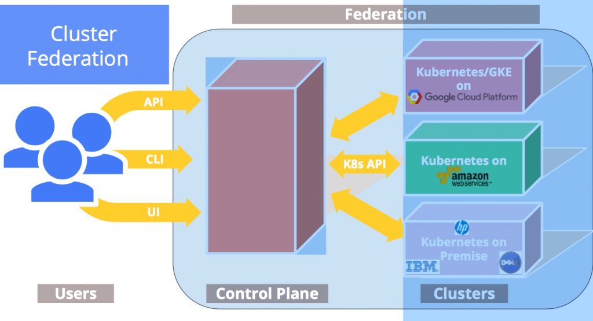

kubernetes federation 工作机制之资源对象同步
1 前言
希望通过本文最简单的方式向熟悉k8s的人说明白其上的federation是干什么的，如何工作的。
关于federation，比较官方的说法是：集群联邦可以让租户/企业根据需要扩展或伸缩所需要的集群；可以让租户/企业在跨地区甚至跨地域的多个集群上部署、调度、监测管理应用。通过集群联邦，租户/企业可以在指定集群上部署应用，可以拉通私有云和公有云建立混合云(hybrid cloud)。
如在design-proposal 中描述的federation提供了cross-cluster scheduling, cross-cluster service discovery, cross-cluster migration, cross-cluster**ing and auditing, cross-cluster load balancing。
简单讲就一句话。能调用一个api，向操作一个k8s集群一样操作多个k8s集群。主要是拉通其下的k8s集群在上部署应用，发布服务，并且可以让其互相访问。
那么是怎么做到的呢？熟悉了kubernetes代码和主要的工作逻辑会发现非常简单。简单看下这部分代码会就会发现federation有如下特点：
- 复用了kubernets的机制
- 复用kubernetes的代码
- 扩展了kubernetes的对象（的定义和功能）
2. 架构
Federation 层的主要组件包括Federation-API Server，Controller-Manager和ETCD。根据Decoupled 的设计的目标和kubernetes 共用类库，而不是共用一个紧密的结构结构。在结构上解耦可以保证，Federation层故障，其下的每个个kubernetes集群不受影响。另外FederationAPI接口和kube-api接口完全兼容，用户可以像之前操作单个kubernetes集群一样操作联邦。

和Kubernetes类似，用户通过kubectl或者API调用向FederationAPI server的接口创建和维护各种对象，数据对象被持久化存储在Federation的ETCD中。联邦只是维护了规划，真正干活还是在其下的各个Cluster上（现实生活中其实也总是这样，你见过在联邦的川普干过什么正经事情）。真正关键的联邦如何通过一个统一的入口来接收请求，在各个cluster上调度。具体到（代码）功能就是联邦中指令如何在cluster上被落实执行。
联邦和其下k8s 集群的调用关系。调用细节下面描述。
3. 主要流程
关键就在于Federation的组件Controller-manager。和K8s其他的controller作用和工作机制类似，通过watch api-server 执行动作来维护集群状态。Federation的Controller-manager的处理逻辑和kubernetes略有不同，在于它一般都要连两个API server，watch 3个API 对象
对于每种Resource对象，都对应一个Controller，在Federation的Controller-manager启动时，启动这些Controller。
以ConfigMap为例，ConfigMapController启动后会watch如下三类接口：
- Federation API server的Cluster接口federation/v1beta1/cluster；
- Federation API server的ConfigMap接口v1/configmap；
- Federation 管理的 N 个kubernetes cluster的Kube-API server 的ConfigMap的接口：v1/ configmap
当ConfigMapController watch到有户通过Federation API 创建（或者更新删除）一个ConfigMap，则会调用对应的每个cluster 的kube-apiserver创建（或者更新删除）对应的ConfigMap。
当ConfigMapController Watch到有新的Cluster加入进来时，调用新的Cluster的kube-api接口创建ConfigMap。Configmap、Secret等对象都是依照以上逻辑，从上向下Sync。
以ConfigMap 的controller为例，其他的都是遵从同一个模板流程。在NewConfigMapController场景controller时对watch 3个api。
Federation API server的ConfigMap接口v1/configmap；
configmapcontroller.configmapInformerStore, configmapcontroller.configmapInformerController = cache.NewInformer(
&cache.ListWatch{
ListFunc: func(options api.ListOptions) (pkg_runtime.Object, error) {
versionedOptions := util.VersionizeV1ListOptions(options)
return client.Core().ConfigMaps(api_v1.NamespaceAll).List(versionedOptions)
},
WatchFunc: func(options api.ListOptions) (watch.Interface, error) {
versionedOptions := util.VersionizeV1ListOptions(options)
return client.Core().ConfigMaps(api_v1.NamespaceAll).Watch(versionedOptions)
},
Federation 管理的 N 个kubernetes cluster的Kube-API server 的ConfigMap的接口：v1/ configmap
/ Federated informer on configmaps in members of federation.
&cache.ListWatch{
ListFunc: func(options api.ListOptions) (pkg_runtime.Object, error) { versionedOptions := util.VersionizeV1ListOptions(options)
return targetClient.Core().ConfigMaps(api_v1.NamespaceAll).List(versionedOptions)},
WatchFunc: func(options api.ListOptions) (watch.Interface, error) {
versionedOptions := util.VersionizeV1ListOptions(options)
return targetClient.Core().ConfigMaps(api_v1.NamespaceAll).Watch(versionedOptions)
}
Federation API server的Cluster接口：federation/v1beta1/cluster；
&cache.ListWatch{
ListFunc: func(options api.ListOptions) (pkg_runtime.Object, error) {
versionedOptions := VersionizeV1ListOptions(options)
return federationClient.Federation().Clusters().List(versionedOptions)
},
WatchFunc: func(options api.ListOptions) (watch.Interface, error) {
versionedOptions := VersionizeV1ListOptions(options)
return federationClient.Federation().Clusters().Watch(versionedOptions)
}
在controller的run中执行reconcile时一般启动两个Hander处理，一个是调用reconcileConfigMap处理一个特地给的configmap，另外一个是调用reconcileConfigMapsOnClusterChange，处理federation的所有configmap。
func (configmapcontroller *ConfigMapController) Run(stopChan <-chan struct{}) {
…
configmapcontroller.configmapDeliverer.StartWithHandler(func(item *util.DelayingDelivererItem) {
configmap := item.Value.(*types.NamespacedName)
configmapcontroller.reconcileConfigMap(*configmap)
})
configmapcontroller.clusterDeliverer.StartWithHandler(func(_ *util.DelayingDelivererItem) {
configmapcontroller.reconcileConfigMapsOnClusterChange()
})
…}
federation/pkg/federation-controller/configmap/configmap_controller.go# reconcileConfigMap
即获取每个cluster上这个configmap的是否存在，如果不存在则构造一个Add的operation，存在则构造一个Update的operation，最终会调用对应cluster的kube-api，在对应的cluster上创建。
func (configmapcontroller *ConfigMapController) reconcileConfigMap(configmap types.NamespacedName) {
baseConfigMapObj, exist, err := configmapcontroller.configmapInformerStore.GetByKey(key)
clusters, err := configmapcontroller.configmapFederatedInformer.GetReadyClusters()
operations := make([]util.FederatedOperation, 0)
for _, cluster := range clusters {
clusterConfigMapObj, found, err := configmapcontroller.configmapFederatedInformer.GetTargetStore().GetByKey(cluster.Name, key)
operations = append(operations, util.FederatedOperation{
Type: util.OperationTypeAdd,
Obj: desiredConfigMap,
ClusterName: cluster.Name,
})
}
err = configmapcontroller.federatedUpdater.UpdateWithOnError(operations, configmapcontroller.updateTimeout,
func(op util.FederatedOperation, operror error)
Operation中包括数据对象、集群名、操作动作等参数。
type FederatedOperation struct {
Type FederatedOperationType
ClusterName string
Obj pkg_runtime.Object
}
即会根据cluster名选择对应的Clientset，连接对应cluster的kube-apiserver上执行对应的操作。而对应的Updater操作在controller被创建的时候定义。这里分别是执行Configmap的创建更新和删除。
util.NewFederatedUpdater(configmapcontroller.configmapFederatedInformer,
func(client kubeclientset.Interface, obj pkg_runtime.Object) error {
_, err := client.Core().ConfigMaps(configmap.Namespace).Create(configmap)
},
func(client kubeclientset.Interface, obj pkg_runtime.Object) error {
_, err := client.Core().ConfigMaps(configmap.Namespace).Update(configmap)
},
func(client kubeclientset.Interface, obj pkg_runtime.Object) error {
err := client.Core().ConfigMaps(configmap.Namespace).Delete(configmap.Name, &api_v1.DeleteOptions{})
})
而对所有configmap的检查是通过调用reconcileConfigMapsOnClusterChange
其实就是当一个新的cluster可用时，触发所有的configmap对象的 reconciliation。其实就是加到deliver的队列中，等待在due的时间被执行。
func (configmapcontroller *ConfigMapController) reconcileConfigMapsOnClusterChange() {
for _, obj := range configmapcontroller.configmapInformerStore.List() {
configmap := obj.(*api_v1.ConfigMap)
configmapcontroller.deliverConfigMap(types.NamespacedName{Namespace: configmap.Namespace, Name: configmap.Name}, configmapcontroller.smallDelay, false)
}
}
这里示例中是通过Configmap的configmap_controller来看这个过程，打开代码结构federation-controller下每个对象都有一个controller。
打开看代码发现主要的结构都差不多。对比下secret_controller.go和configmap_controller的一个代码片段，可以看到简直是拷代码了。
在当前的upstream上，以上逻辑都抽象成一个模板流程在Sync中。可以看到configmap、secrete等大部分对象（甚至包括Deployment）都被模板化了。
4 关于应用部署和服务发现
Deployment（RS）和 Service作为两个比较特殊的资源对象，主要流程也是参照了上面的流程。差别在于Deployment在Federation层在应用上加了个annotation，来描述在cluster如何部署应用。在其reconcile的方法中会调用一个schedule的逻辑来解析配置的策略，进而决定在不同的cluster创建多少个实例，然后调用对应cluster的接口来创建实例。这个后面作为一个专题专门描述下规则和解析下这部分的实现。
而Service的逻辑可能更要略微复杂一些，上面描述的controller主流程中从Federation层向下的Sync来维护状态外，还包括从其下的cluster集群向federation层同步数据的过程。这个主要是因为Federation跨集群的服务注册和服务发现需要。主要思路是在Federation的Service扩展了k8s service的定义，即在Federation层创建一个Service，则会在对应的集群里创建同样的service，每个集群的service要求有一个可以被外面访问的地址，作为在federation层service的endpoint，并且会在全局的DNS中注册对应的域名。当下面某个cluster的service的所有endpoint都不可用或该集群故障时，federation层service和域名都要被更新。 这部分后面也会专门描述下。